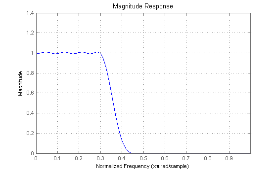
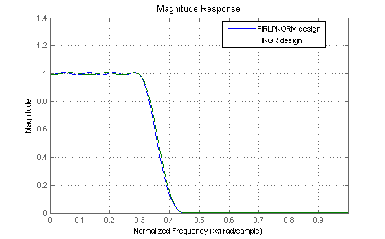
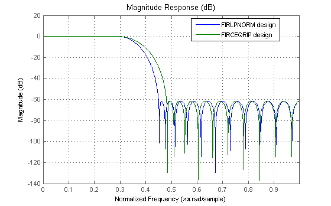
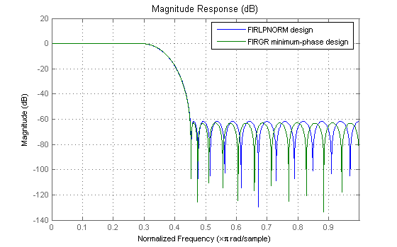
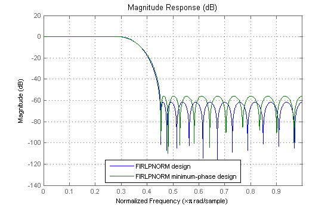
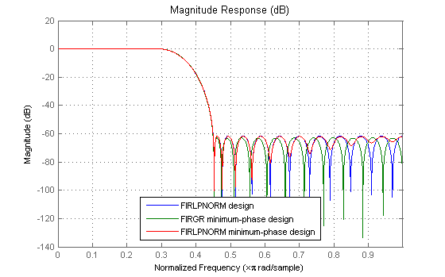
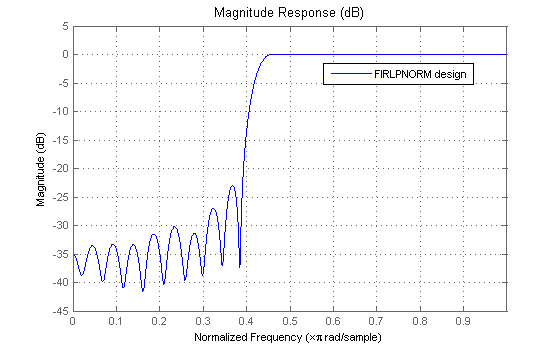
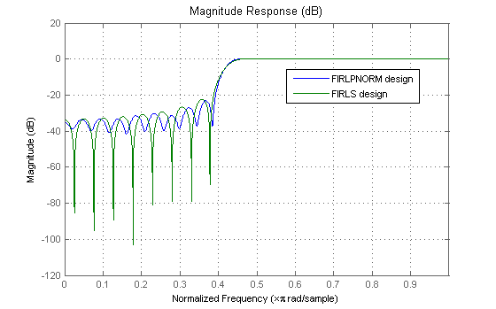
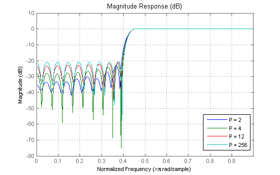

This demo shows some of the key features of the FIRLPNORM function. This function uses a least-Pth unconstrained optimization algorithm to design FIR filters with arbitrary magnitude response.
The syntax for FIRLPNORM is similar to that of IIRLPNORM (see the least Pth-norm optimal IIR filter design demo for details) except that (obviously) the denominator order is not specified.
The function designs optimal FIR filters in the least-Pth sense. However the filter is not constrained to have linear-phase (although linear-phase is generally considered a good thing) i.e. the impulse response has no special symmetry properties.
However, the linear-phase constraint also results in filters with larger order than the more general nonlinear-phase designs (we should point out that in some hardware implementations, one can reduce the number of multipliers in half when implementing linear-phase filters because of the symmetry in the coefficients). For example, consider the following FIRLPNORM design
N = 30; F = [0 0.3 0.45 1]; E = F; A = [1 1 0 0]; W = [1 1 10 10]; b = firlpnorm(30,F,E,A,W); hlpnorm = dfilt.dffir(b); h = fvtool(hlpnorm); set(h,'MagnitudeDisplay','Magnitude'); set(h, 'Color', [1 1 1])
If we zoom in, we can see that the filter has a passband peak ripple of about 0.008 and stopband peak ripple of about 0.000832. A FIRPM or FIRGR design with comparable specs will require a 37th order filter. This is especially significant considering that FIRGR will provide the lowest order linear-phase FIR filter that meets the specifications.
dev = [0.008 0.000832]; b=firgr('minorder',F,A,dev); hfirgr = dfilt.dffir(b); orderfirgr = order(hfirgr) addfilter(h,hfirgr) legend(h,'FIRLPNORM design','FIRGR design');
orderfirgr =
37
 Another way to look at this is by using the FIRCEQRIP function which also designs linear-phase equiripple filters, but whose specifications are given in a different way to FIRGR (see the constrained equiripple FIR filter design demo for details). If we want a linear-phase filter of 30th order that meets the passband and stopband ripple that the design from FIRLPNORM achieves we need to live with a larger transition width.
b = firceqrip(30,(F(2)+F(3))/2,dev); hceqrip = dfilt.dffir(b); set(h, 'Filters', [hlpnorm,hceqrip], 'MagnitudeDisplay','Magnitude (dB)'); legend(h,'FIRLPNORM design','FIRCEQRIP design');
Of course it is also possible to design nonlinear-phase filters with FIRGR by specifying the 'minphase' option. Doing so, allows us to obtain an FIR filter of lower order than in the linear-phase case and still meet the required specs. However, even in this case, the result is a non-optimal nonlinear-phase filter because the filter order is larger than the minimum required for a nonlinear-phase equiripple filter to meet the specs as is evident from the following example.
b = firgr('minorder',F,A,dev,'minphase'); hfirgrmin = dfilt.dffir(b); orderfirgrmin = order(hfirgrmin) set(h, 'Filters', [hlpnorm,hfirgrmin]); legend(h,'FIRLPNORM design','FIRGR minimum-phase design');
orderfirgrmin =
32
 FIRLPNORM does allow for the option to constrain the zeros to lie on or inside the unit circle, resulting in a minimum-phase design. The constraint, however, results in larger passband ripple and less stopband attenuation than the unconstrained design.
b = firlpnorm(30,F,E,A,W,'minphase'); hlpnormmin = dfilt.dffir(b); set(h, 'Filters', [hlpnorm,hlpnormmin]); legend(h,'FIRLPNORM design','FIRLPNORM minimum-phase design');
If we increase the order to that of the minimum-phase filter designed with FIRGR we can see that we meet the specs met by both the 30th order FIRLPNORM (nonminimum-phase) design and the 32nd order FIRGR minimum-phase design.
b = firlpnorm(orderfirgrmin,F,E,A,W,'minphase'); hlpnormmin2 = dfilt.dffir(b); set(h, 'Filters', [hlpnorm,hfirgrmin,hlpnormmin2]); legend(h,'FIRLPNORM design',... 'FIRGR minimum-phase design',... 'FIRLPNORM minimum-phase design');
Like IIRLPNORM and IIRLPNORMC, FIRLPNORM allows for the specification of the Pth-norm used to optimize the filter. The Pth-norm is specified in the exact same way as in IIRLPNORM, i.e. a two element vector with Pinit and Pfinal as its elements. Pinit specifies the initial Pth-norm used by the algorithm (this aids in the convergence) and Pfinal specifies the final Pth-norm with which the filter is optimized.
For example, a least-squares design for the above specs can be obtained as follows:
N = 40; F = [0 0.4 0.45 1]; E = F; A = [0 0 1 1]; W = [1 1 10 10]; P = [2 2]; b = firlpnorm(N,F,E,A,W,P); hl2 = dfilt.dffir(b); set(h, 'Filters', hl2); legend(h,'FIRLPNORM design')
In comparison, we design a linear-phase least-squares filter using FIRLS. Once again, for the same filter order, the linear-phase constraint results in less stopband attenuation and a larger passband ripple.
W = [1 20]; b = firls(N,F,A,W); hls = dfilt.dffir(b); set(h, 'Filters', [hl2,hls]); legend(h,'FIRLPNORM design','FIRLS design');
Equiripple designs are useful when one requires the smallest possible order to meet a set of design specifications. To meet the same specs with a least-squares design requires a higher order filter. However, the higher order does provide extra attenuation (less ripple) for a large portion of the stopband (passband). In fact least-squares design minimize the energy of the stopband. Compromises between equiripple design and least-squares design can be reached by using intermediate norms. For example we show the design of a filter wih the same specs, but optimized for the following norms: 2, 4, 12, 256 (approx. infinity norm).
W = [1 1 10 10]; P4 = [2 4]; b = firlpnorm(N,F,E,A,W,P4); hl4 = dfilt.dffir(b); P12 = [2 12]; b = firlpnorm(N,F,E,A,W,P12); hl12 = dfilt.dffir(b); Pinf = [2 256]; b = firlpnorm(N,F,E,A,W,Pinf); hlinf = dfilt.dffir(b); set(h, 'Filters', [hl2,hl4,hl12,hlinf]); legend(h,'P = 2','P = 4','P = 12','P = 256');
In order to meet the minimum stopband attenuation of the equiripple (256-norm) case it is necessary to increase the order of the other designs.